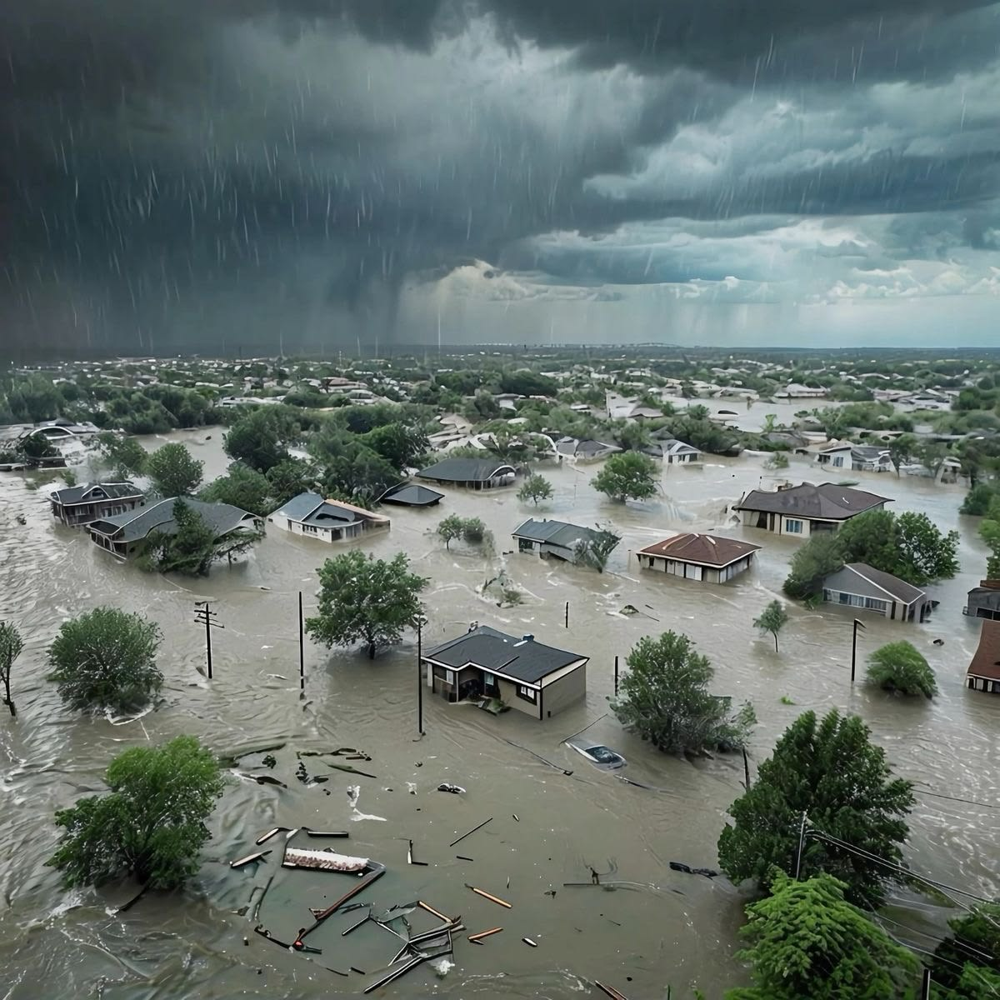

Platform terintegrasi Pemerintah Kabupaten Bekasi untuk pemantauan banjir real-time menggunakan kecerdasan buatan dan analisis cuaca satelit presisi tinggi.

Menarik data cuaca satelit untuk memberikan prediksi intensitas hujan 12 jam ke depan bagi 23 kecamatan secara akurat.
Mesin kecerdasan buatan yang menganalisis korelasi data untuk memberikan saran mitigasi darurat spesifik bagi setiap wilayah.
Peta interaktif yang mengklasifikasikan kerawanan wilayah berdasarkan topografi dan penggunaan lahan secara visual presisi.